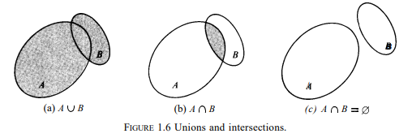

주어진 집합 $S$에 대해 우리는 새로운 집합을 형성할 수 있으며, 이는 $S$의 부분집합(subsets)이라고 부른다. 가령 $10$보다 작으며 4로 약분 가능한 양의 정수로 구성되는 집합은 $10$보다 작은 모든 짝수 정수 집합의 부분집합이다. 일반적으로 우리는 아래 정의를 취한다.
부분집합의 정의. 집합 $A$의 모든 원소가 집합 $B$에도 속할 때 $A$는 $B$의 부분집합이라고 부르며 다음처럼 적는다. $$ A \subseteq B.$$ 우리는 또한 $A$가 $B$에 포함된다고 말하거나 $B$가 $A$를 포함한다고 말하기도 한다. $\subseteq$ 관계는 포함관계(set inclusion)라고 부른다.
$A \subseteq B$라는 진술은 $B \subseteq A$라는 가능성을 배제하지 않는다. 실상 우리는 $A \subseteq B$와 $B \subseteq A$를 동시에 지닐 수 있다. 다만 이는 오직 $A$와 $B$가 같은 원소를 지닐 때만 일어난다. 달리 말하면 아래와 같다.
$$A=B\;if\;and\;only\;if\;A \subseteq B\; and\;B\subseteq A.$$
이 정리는 상등과 포함 관계의 정의에 대한 즉각적인 귀결이다. $A \subseteq B$이지만 $A \neq B$일 때, $A$는 $B$의 진부분집합(proper subset)이라고 부른다. $A \subset B$라고 쓴다.
집합론의 모든 응용에 있어 우리는 주어진 고정된 집합 $S$를 미리 지닌다. 그리고 우리의 유일한 관심사는 이 주어진 집합의 부분집합에 관한 것이다. 집합 $S$는 응용에 따라 차이를 보일 수 있다. 이는 각각의 특정한 논의에 따라 전체 집합(universal set)이라고 부른다. 아래 표기법은 속성 $P$를 만족하는 $S$의 모든 원소 $x$를 가리킨다.
$$ \left \{ x | x \in S\; and\;x\;satisfies\;P \right \}$$
우리가 지시하는 전체 집합이 이해될 때면, 우리는 $S$에 대한 지시체를 생략하고 단순하게 $\left \{x|x\;satisfies\;P \right \}$라고 쓴다. 이는 "$P$를 만족하는 모든 $x$의 집합"이라고 읽는다. 이렇게 표기된 집합은 정의하는 속성(defining property)으로 기술된다고 부른다. 가령 모든 양의 실수의 집합은 $\left \{x|x>0 \right \}$이라고 표기될 수 있다. 이 경우 전체 집합 $S$는 모든 실수의 집합으로 이해된다. 이와 유사하게 모든 양의 짝수 정수 집합 $\left \{ 2,4,6,\;\cdots \right \}$은 $\left \{x|x\;is\;a\;positive\;even\;integer \right \}$로 표기될 수 있다. 물론 문자 $x$는 더미(dummy)이며 어떤 임의의 기호로 대체될 수 있다. 따라서 우리는 다음처럼 쓸 수도 있다.
$$\left \{x|x>0 \right \} = \left \{y|y>0 \right \} = \left \{t | t>0 \right \}.$$
하나의 집합이 어떤 원소도 포함하지 않을 수도 있다. 이 집합은 공집합(empty set || void set)이라고 부르고 $\varnothing$ 기호로 표기한다. 우리는 $\varnothing$을 모든 집합의 부분집합으로 간주할 것이다. 혹자는 집합을 특정 객체, 즉 그 원소를 포함하는 (가방이나 상자처럼) 컨테이너와 유비적으로 생각하는 것이 유용하다고 본다. 그렇다면 공집합은 빈 컨테이너와 유비될 수 있을 것이다.
논리적인 난항을 피하고자 우리는 원소 $x$와 그 유일한 원소가 $x$인 집합 $\left \{ x \right \}$를 구분해야 한다. (모자가 든 상자는 개념적으로 모자 자체와 구분된다.) 요컨대 공집합 $\varnothing$은 집합 $\left \{ \varnothing \right \}$과 같지 않다. 공집합 $\varnothing$은 아무 원소도 포함하지 않는 반면, 집합 $\left \{ \varnothing \right \}$은 하나의 원소로 $\varnothing$을 지닌다. (빈 상자 하나를 포함하는 상자는 빈 상자가 아니다.) 오직 하나의 원소로 구성되는 집합은 이따금 한원소 집합(one-element sets)이라고 부른다.
그림은 종종 집합 간의 관계를 시각화하는 데 도움을 준다. 가령 우리는 집합 $S$를 어떤 평면 위의 한 구역으로 보고 각 원소를 하나의 점으로 볼 수 있다. $S$의 부분집합은 그렇다면 $S$ 내부의 점들을 모은 것으로 볼 수 있다. 가령 그림 1.6(b)에서 색칠된 부분은 $A$의 부분집합인 동시에 $B$의 부분집합이다. 이런 유형의 시각적 도구는 벤다이어그램(Venn diagrams)이라고 부른다. 집합론의 정리가 갖는 타당성을 검증하거나 이들을 증명하는 방법론을 제안하는 데 유용하다. 물론 증명 자체는 다이어그램이 아니라 오직 어떤 개념의 정의에 의존해야 한다.